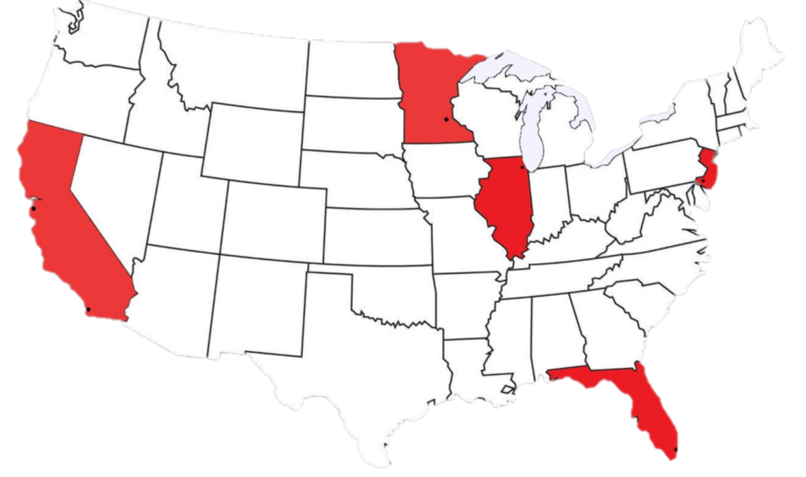

The Assassination of Gianni Versace
In the Spring and Summer of 1997, Andrew Cunanan went on a killing spree which claimed five lives.
Among those lives was that of fashion designer Gianni Versace. Hover and click around the map to
learn about what occurred during this tragic time.
July 15, 1997

